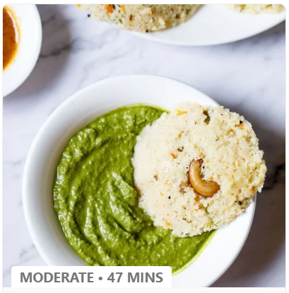
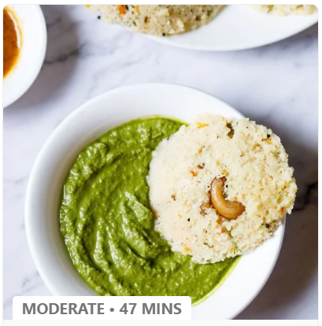

Medu Vada is a popular South Indian breakfast snack of
donut shaped lentil fritters that are fluffy, crispy, soft and delicious. If sweet breakfast
isn’t your thing, try this recipe for savory spiced donuts made with black gram lentils, spices
and herbs. Traditionally paired with Sambar and Coconut Chutney, these make for a comforting,
filling and satisfying breakfast or snack.
Hi, I am devarsh. Running the kitchen
for decades, I share tried and tested Vegetarian recipes on my food blog since 2009, with a
step-by-step photo guide & plenty of tips so that your cooking journey is easier. I also have a
professional background in cooking & baking.
You can share your experience related to a recipe or give your suggestions or feedback.
We
reply
to most of the comments or queries we get on the blog.
Comments are moderated by us every day. So it does take some hours or a day before you
see
the
reply to your comment. If you have tried a recipe, you can even rate or review it.
Spammy, rude or offensive comments are automatically deleted as we have enabled the
comment
system that way. Event links and promotional links will also not be approved.
1. Ingredients for mendu Vada:
1 cup urad dal (black gram)
2-3 green chilies, finely chopped
1 inch piece of ginger, grated
A handful of fresh curry leaves, chopped
1 teaspoon cumin seeds
Salt to taste
Oil for deep frying
2. Instructions for mendu vada recipe:
Soaking Urad Dal: Rinse urad dal under cold water and soak it in water
for at least 4-6 hours or overnight.
Draining and Grinding: After soaking, drain the water from urad dal.
Grind the dal in a blender or wet grinder, adding minimal water to form a smooth and
thick batter.
Adding Seasonings: Transfer the batter to a mixing bowl. Add finely
chopped green chilies, grated ginger, chopped curry leaves, cumin seeds, and salt to
taste. Mix well to incorporate the seasonings evenly.
Shaping the Vadas: Heat oil in a deep pan for frying. Keep a bowl of
water handy. Wet your hands with water to prevent the batter from sticking. Shape the
batter into round discs with a hole in the center.
Frying: Carefully slide the shaped vadas into the hot oil. Fry on
medium heat until they turn golden brown and crisp on both sides.
Draining Excess Oil: Use a slotted spoon to remove the vadas from the
oil. Place them on absorbent paper to drain excess oil.
Serve: Medu Vadas are traditionally served with coconut chutney and
sambar. They can also be enjoyed with tomato chutney or yogurt.
Enjoy: Serve the Medu Vadas hot and crispy. The combination of the
crispy exterior and soft interior makes them a delicious snack or breakfast item.
Cook toor dal in a pressure cooker with enough water until it becomes soft and
mushy.
In a large pot, add chopped vegetables, chopped onions, tomatoes, tamarind pulp,
sambar powder, turmeric powder, and salt. Cook until the vegetables are tender.
Add the cooked toor dal to the pot and mix well. Adjust the consistency by adding
water if needed.
In a separate pan, heat oil. Add mustard seeds, cumin seeds, asafoetida, dry red
chilies, and curry leaves. Allow them to splutter.
Pour the tempering into the sambar and mix well. Simmer for 10-15 minutes.


 
